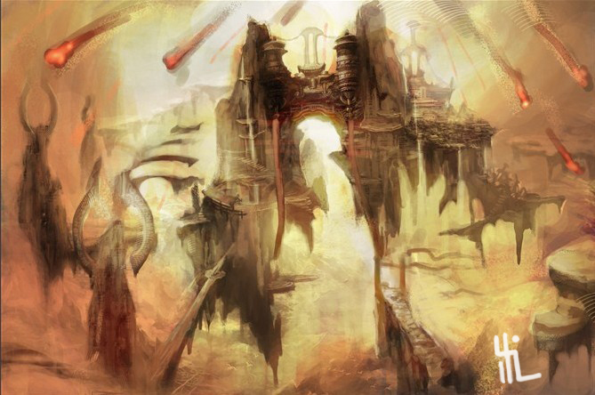
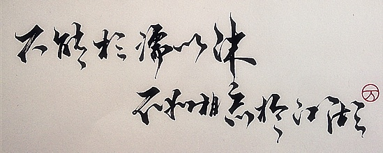
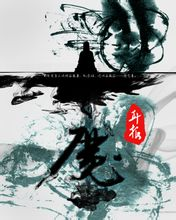

这是三部曲
仙逆
经典回顾
耳根 2009-06-08
“杏花树；开白花，养女莫把道士家。年前二郎刚上山，年后一郎尸骨寒，养女哭声陪死人，却把棺材当自家杏花树，开白花，孩童莫要见道家，若问我的年岁几。还称没有道缘呀，狗一叫，猫一抓。吓得道士回老家。”（孩童也唱莫修道，其中凄苦几人知)
千年的相守，又是千年的等待，一直期盼对方苏醒的一日，但眼下，他与青霜距离不足三丈，但却有种仿若距离了万古岁月一般的错觉，仿若比之生与死的距离，还要遥远……这世间，有一种距离，不是生与死，而是忘记……（多情却被无情恼）
我一生逆天，不甘心命运摆弄，欲成为天地之主，欲踏碎这天，轰灭这地!我与天道抢妻魂，与岁月争稗修，一生所作所为，或许生灵涂炭，但却无愧于心，我王林行走天地，磊磊两千年，心中坦荡，求的，就是一颗逆心，修的，就是一根逆骨!百度一下你就知道这最后一道休随之雷，既然我无法寻到，那便以我一生之修，化作一道逆雷，这逆雷从未诞生在天地，但今日，以我王林之名，让这天地间，从此再多出一道雷霆，取代那往昔的第九伴雷，成为此后，唯一的第九雷，逆命之雷!”（修逆道，雷也逆天！）

若魂悲，千里思亲归，若魂归，墓前心泪悲……
“仙已不在！修仙之说，在于远古。那是的仙界，是修士的圣地！所以，方有修仙一语！真，是何？真，就是一切的真相之意。仙界不在之后，修士好像无根之木，无家可归，孤独漂泊。百度一下你就知道此刻，便有了修真一脉，其说修真，也是修己。而如今，仙，真，均已成为过去，我们追寻的，是道。可此道，并非天道！修道之道，乃是道路。寻找一条第三步的道路，这便是修道之道的解释！”
求魔
经典回顾
耳根 2012-06-08
彼苍者天，尔独何泣! 夫道蛮欲，穷八方之边，余火融血，念出焚苍，念尽燃穹……若火月出云，苍茫天地间……
风飘飘，雪遥遥。梦中不知岁已老，朦胧人间谁登高。 夜渺渺，烟袅袅。是非真假一座桥，轮回几多一人少。
一如流年似水，浮生若梦，问人生几何，为什么总是从寒冬到夏末，又为何偏偏从幕鼓到晨钟，那过去的四季里，谁在叹息，百度一下你就知道那敲响的钟声里，又有多少悲欢离谷……是谁的弹指一挥间，花开花谢，月圆月缺，低头看去的烛火中，你看到的是万家灯炽……还是多少繁华锦瑟都已渐行渐远，多少璀璨华彩都已黯然失色。

真实一览







我欲封天
最新作品
耳根 2014-06-08
- 第一卷
- 第二卷
- 第三卷
| |
仙逆 |
求魔 |
我欲封天 |
| 总点击 |
41283180 |
19611514 |
20713448 |
| 总推荐 |
3759311 |
3200435 |
4342074 |
| 总字数 |
6594381 |
4595891 |
4977001 |
登录
注册
请输入邮箱地址：
邮箱地址请按要求格式输入
请输入密码： 请重复输入密码：
密码请为6-16位英文数字
性别：男
女
城市:
爱好：运动艺术科学
个人描述：
版权所有@